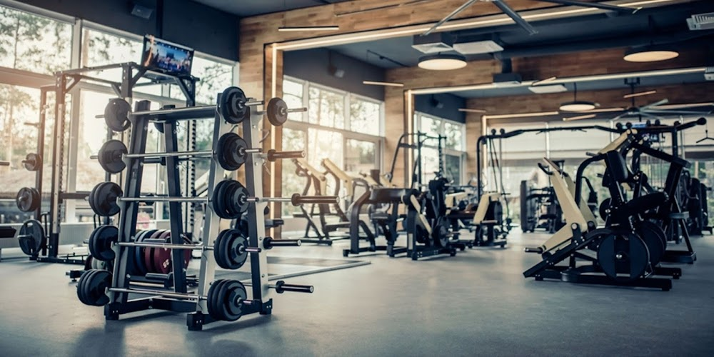

Scopul acestui site
Scopul site-ului este de a ajuta persoanele care au decis că vor sa iși transforme stilul de viata intr-unul mai sanatos prin practicarea sportului in sala de forta sau in parcurile special amenaj ate in acest sens. Pe acest site veti gasi informatii utile despre diferite exercitii si modul corect de executare a acestora, precum si videoclipuri in care este prezentata forma corecta in timpul exercitiului. Exercitiile prezentate sunt considerate "de baza", asigurand dezvoltarea armonioasa a intregului corp.
De ce este sportul important?
Sportul este vital în viața omului. Acesta este singurul mod prin care poți fi cu adevărat sănătos, mai ales în combinație cu o alimentație și alte obiceiuri sănătoase. Dacă te-ai întrebat vreodată de ce este important sau la ce ajută sportul, vei afla beneficiile fizice, dar și psihice ale acestuia. Indiferent de vârstă, activitatea fizică este necesară pentru sănătate, așa că iată care este importanța sportului la orice vârstă și ce beneficii fizice derivă de aici: importanța sportului în viața copiilor: întărește mușchii și oasele, dezvoltă flexibilitatea, echilibrul și rezistența, formează postura corectă și creșterea imunității; rolul sportului în viața adolescenților: modelează și menținere corpul, arde grăsimile, dezvoltă armonios aparatului locomotor, îmbunătățește circulația sangvină, menține puterea mușchilor și oaselor; de ce este bun sportul pentru vârstnici: menține sau redă mobilitatea oaselor, întărește mușchii, îmbunătățește circulația sângelui și respirația, menține fermitatea pielii, elimină grăsimea. Pe lângă aceste beneficii fizice, există și o serie de avantaje psihice care provin din practicarea sportului în viața de zi cu zi: dezvoltarea abilității de concentrare, creșterea abilității de lucru în echipă, tratează stările negative ale psihicului, cum ar fi anxietatea și depresia, dezvoltarea spiritului de fair play, creșterea încrederii de sine, dezvoltarea abilităților sociale, dezvoltarea capacității de auto-disciplinare, formează motivația, ambiția și angajamentului pe termen lung, creșterea abilităților competitive, formarea abilității de a accepta victoria sau înfrângerea.